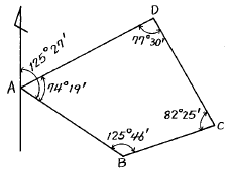
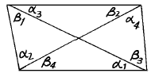
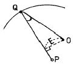
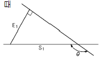
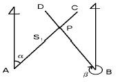
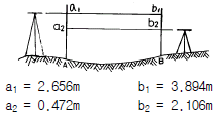
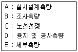
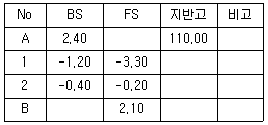
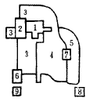
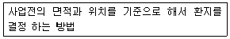

지적기사 (2004-05-23 기출문제)
1과목: 지적측량
1. 경사거리를 수평거리로 환산하는 공식은? (단, 경사각은 θ이다.)
- 경사거리 x tanθ
- 경사거리 x sinθ
- 경사거리 x cosθ
- 경사거리 x cotθ
(정답률: 알수없음)

2. AB의 방위각과 각 점의 내각이 그림과 같을 때 CD의 방위각은?

- 153° 08′
- 153° 38′
- 333° 38′
- 339° 08′
(정답률: 알수없음)
3. 그림과 같은 사각망의 관측각조정에서 Σ α + Σ β - 360°= +32초이고 (α1 + β4) - (α3 + β2) = -8초일 때 각 α3에 배부될 조정량은?

- + 2초
- + 6초
- - 2초
- - 6초
(정답률: 알수없음)
4. 지적삼각보조측량의 방법에 대한 설명으로 옳지 않은 것은?
- 교회법으로 시행한다.
- 망평균계산법으로 시행한다.
- 전파기측량법으로 시행한다.
- 광파기측량법으로 시행한다.
(정답률: 알수없음)
5. 세부측량을 경위의측량방법으로 시행할 경우 토지 면적의 측정방법은?
- 플라니미터법
- 삼사법
- 제형법
- 좌표면적 계산법
(정답률: 알수없음)
6. 원의 중심 0에서 직선 PQ에의 수선장 E = 45.16m, 원의 반경 R=200m, PQ의 방위각 VPQ = 315° 16'15"일 때 원의 중심 0에서 Q로 향하는 방위각 V0Q는?

- 328° 19'15"
- 315° 16'15"
- 302° 13'15"
- 13° 03'00"
(정답률: 알수없음)
7. 그림에서 E1=20m, θ =150° 일 때 S1은?

- 10.0m
- 23.1m
- 34.6m
- 40.0m
(정답률: 알수없음)
8. 수평각 측정시 윤곽도를 달리하는 이유로서 가장 타당한 것은?
- 각 관측의 편의를 위해서
- 눈금오차를 소거하기 위해서
- 부정오차를 제거하기 위해서
- 관측값 계산의 편의를 위해서
(정답률: 알수없음)
9. 수평각관측에서 시준선의 편심오차를 소거하는 방법으로 가장 타당한 것은?
- 망원경의 정.반으로 관측값을 평균한다.
- 반복법에 의한 관측값을 평균한다.
- 편심거리와 편심각을 측정하여 보정한다.
- 접안경의 조준나사를 정확히 조정한다.
(정답률: 알수없음)
10. 종선교차가 0.22m, 횡선교차가 0.33m일 때 연결오차는?
- 0.22m
- 0.33m
- 0.40m
- 0.55m
(정답률: 알수없음)
11. 다음중 구소삼각 원점에 해당되지 않는 것은?
- 망산원점
- 가리원점
- 율곡원점
- 울릉원점
(정답률: 알수없음)
12. 전파기 또는 광파기측량법에 의한 지적삼각점의 관측과 계산에 관한 설명으로 틀린 것은?
- 표준편차가 ± (5mm+5ppm) 이상의 정밀측거기를 사용한다.
- 점간거리 측정은 5회 측정한다.
- 측정치의 교차가 10만분의 1미터 이하일 때는 평균치를 측정거리로 하고 원점에 투영된 평면거리로 계산하여야 한다.
- 삼각형의 내각계산은 기지각과의 차가 ± 30초 이내이어야 한다.
(정답률: 알수없음)
13. 두 직선의 교차점(P) 계산에 있어서 AP의 거리(S1)는? (단, △XAB =18.45m, △YAB =21.15m, α =349° 25′ 25.2″ β =259° 26′ 18.9″ , 그림은 개략도임.)

- 12.08m
- 13.26m
- 14.26m
- 16.41m
(정답률: 알수없음)
14. 축척이 1/1,200인 지역에서 800m2의 토지를 분할하고자 할 때 신구면적 오차의 허용범위는?
- 114m2
- 57m2
- 22m2
- 20m2
(정답률: 알수없음)
15. 지적법상 지적측량을 할 경우가 아닌 것은?
- 토지의 경계를 좌표로 등록할 때
- 토지의 경계를 지표에 복원할 때
- 지적삼각보조점 표석을 설치할 때
- 임야를 합병할 때
(정답률: 알수없음)
16. 경위의측량방법에 의한 세부측량의 계산방법으로 틀린것은?
- 각은 초 단위
- 변장은 cm 단위
- 좌표는 mm 단위
- 진수는 5자리 이상
(정답률: 알수없음)
17. 측판측량방법에 의한 세부측량을 교회법으로 실시할 경우에 대한 설명 중 틀린 것은?
- 3방향 이상의 교회에 의한다.
- 방향각의 교각은 30도 이상 150도 이하로 한다.
- 전방교회법 또는 후방교회법에 의한다.
- 방향선의 도상길이는 10㎝ 이하로 한다.
(정답률: 알수없음)
18. 면적측정을 하여야 하는 대상은?
- 신규등록
- 지번변경
- 지목변경
- 합병
(정답률: 알수없음)
19. 지적위성기준점 성과 고시에 관한 사항으로 옳지 않은 것은?
- 지적위성기준점 명칭
- 좌표 및 표고
- 측량성과 보관 장소
- 자오선 수차
(정답률: 알수없음)
20. 제주도지역에 위치한 삼각점을 지적측량에 사용하기 위하여 가산하는 평면직각종횡선수치는?
- 종선수치에는 20만미터를 횡선수치에는 50만미터를 가산한다.
- 종선수치에는 25만미터를 횡선수치에는 50만미터를 가산한다.
- 종선수치에는 50만미터를 횡선수치에는 20만미터를 가산한다.
- 종선수치에는 55만미터를 횡선수치에는 20만미터를 가산한다.
(정답률: 알수없음)
2과목: 응용측량
21. 수준측량을 구분할 때 간접수준측량에 해당되지 않는 것은?
- 교호수준측량
- 시거수준측량
- 기압수준측량
- 삼각수준측량
(정답률: 알수없음)
22. 곡선 반지름(R)=150m, 교각(I)=90° 인 단곡선에서 기점으로부터의 교점(I.P)의 추가거리가 1273.45m일 때, 곡선 시점(B.C)의 추가거리는?
- 1034.25m
- 1123.45m
- 1245.56m
- 1368.86m
(정답률: 알수없음)
23. 절대표정에 대한 설명으로 옳은 것은?
- 촬영 당시의 종시차를 소거한다.
- 주점거리와 주점의 조정이 이루어진다.
- 축척 조정, 수준면 조정 및 위치 결정이 이루어진다.
- 한 쌍의 입체사진 내에서 대응되는 모형을 접합한다.
(정답률: 알수없음)
24. 곡선 반지름 R = 80m, 클로소이드 곡선길이 L = 40m일 때 클로소이드 곡선의 매개변수 A는?
- 15.75m
- 32.78m
- 40.25m
- 56.57m
(정답률: 알수없음)
25. 하천측량에서 수위관측소의 설치장소로 부적당한 곳은?
- 교각, 기타 구조물 등에 의한 수위변화가 없는 곳
- 어떤 갈수시에도 양수표로 수위측정이 가능한 곳
- 유속의 변화가 크고, 상하류 약 100m 정도 평지인 곳
- 지천의 합류점 및 분류점으로 특별한 수위변화가 없는 곳
(정답률: 알수없음)
26. 태양이나 별을 이용하여 미지점의 위치를 결정하는 측량은?
- 천문측량
- 위성측량
- 3차원측량
- 공간삼각측량
(정답률: 알수없음)
27. 지형측량을 실시하여 등고선을 삽입할 경우 A, B 두 점의 표고가 각각 100m, 500m이고 수평거리가 250m인 경우 표고 130m되는 점을 구할 경우 A 점으로부터 수평거리는?
- 15.75m
- 17.50m
- 18.75m
- 19.25m
(정답률: 알수없음)
28. 시거측량결과 협장(ℓ )이 0.80m, 연직각(α )이 +15° , 승정수(K)가 100, 가정수(C)가 0인 경우 수평거리와 고저차는 각각 얼마인가?
- 74.64m, 20.00m
- 79.30m, 21.25m
- 75.30m, 22.15m
- 77.15m, 20.00m
(정답률: 알수없음)
29. 노선측량의 완화곡선에서 클로소이드에 대한 설명으로 옳지 않은 것은?
- 클로소이드는 곡률이 곡선의 길이에 비례한다.
- 모든 클로소이드는 닮은 꼴이다.
- 철도의 종단곡선 설치에 가장 효과적이다.
- 클로소이드의 요소에는 길이의 단위를 갖는 것과 단위가 없는 것이 있다.
(정답률: 알수없음)
30. GPS의 구성요소 중 위성을 추적하여 위성의 궤도와 정밀 시간을 유지하고 관련 정보를 송신하는 역할을 담당하는 부문은?
- 우주부문
- 제어부문
- 수신부문
- 사용자부문
(정답률: 알수없음)
31. 갱내외 연결측량방법 중 1개의 수직갱에 의한 방법은?
- 간접법
- 우회식
- 기고식
- 정렬식
(정답률: 알수없음)
32. 사진측량을 촬영방향에 의해 분류할 때 사진기 광축이 연직선과 3° 이내로 촬영한 사진은?
- 경사사진
- 실체사진
- 수직사진
- 정사사진
(정답률: 알수없음)
33. 교호수준측량을 실시하여 다음 결과를 얻었다. A점의 표고가 56.204m일 때 B점의 표고는?

- 54.130m
- 54.768m
- 55.238m
- 57.641m
(정답률: 알수없음)
34. 노선측량의 일반적인 작업순서는?

- A-B-C-D-E
- B-C-A-D-E
- E-B-A-D-C
- C-B-A-E-D
(정답률: 알수없음)
35. 비교적 소축척으로 산지 등의 측량에 이용되는 등고선 측정 방법으로 지성선 상의 중요점의 위치와 표고를 측정하고 이 점들을 기준점으로 하여 등고선을 삽입하는 방법은?
- 점고법
- 방안법
- 횡단점법
- 종단점법
(정답률: 알수없음)
36. 갱내에서의 수준측량 결과가 다음과 같을 때 B점의 지반고는 ? (단, 단위는 m임)

- 112.20m
- 114.70m
- 115.70m
- 116.20m
(정답률: 알수없음)
37. 각 관측에서 1° 를 라디안으로 표시하면 얼마인가?
- 0.63132
- 0.01745
- 1.04719
- 2.06265
(정답률: 알수없음)
38. 원격탐사(Remote Sensing)에 관한 정의로 가장 옳은 것은?
- 지상에서 대상 물체에 전파를 발생시켜 그 반사파를 이용하여 측정하는 방법
- 센서를 이용하여 지표의 대상물에서 반사 또는 방사된 전자스펙트럼을 측정하고 이들의 자료를 이용하여 대상물이나 현상에 관한 정보를 얻는 기법
- 우주에 산재해 있는 물체들의 고유스펙트럼을 이용하며 각각의 구성성분을 지상의 레이다망으로 수집하여 처리하는 방법
- 우주선에서 찍은 중복된 사진을 이용하여 지상에서 항공사진의 처리와 같은 방법으로 판독하는 기법
(정답률: 알수없음)
39. 중복된 등고도의 항공사진이 연직사진일 경우 시차로 알 수 있는 것은?
- 토지의 이용 상태
- 두 점간의 비고
- 사진의 축척
- 1매의 사진이 포용하는 면적
(정답률: 알수없음)
40. 축척 1/50000의 지형도에서 A의 표고가 235m이고, B의 표고가 563m일 때 지형도 상에 주곡선의 간격으로 등고선을 몇 개 삽입할 수 있는가?
- 13
- 15
- 17
- 19
(정답률: 알수없음)
3과목: 토지정보체계론
41. 인구추계방법 중 그 성격이 다른 하나는?
- 등차급수법
- 최소자승법
- 로지스틱법
- 정주모형법
(정답률: 알수없음)
42. 세계에서 제일 먼저 토지구획정리사업이 실시된 나라는?
- 영국
- 프랑스
- 독일
- 일본
(정답률: 알수없음)
43. 현대도시계획의 특징에 해당되지 않는 사항은?
- 보루형 도시의 유지
- 토지구획 정리 사업의 활발
- 유기적인 교통계획의 수립
- 지역지구제의 적극적 이용
(정답률: 알수없음)
44. 광역도시계획에는 광역계획권의 지정목적을 달성하는데 필요한 사항에 대한 정책방향이 포함되어야 하는데 그 내용이 아닌 것은?
- 광역계획권의 공간구조와 기능분담에 관한 사항
- 녹지관리체계와 환경보전에 관한 사항
- 경관계획에 관한 사항
- 가구 및 획지의 규모와 조성계획에 관한 사항
(정답률: 알수없음)
45. 다음중 그리이스 도시의 특징에 해당되는 것은?
- 아고라(Agora)
- 포름(Forum)
- 피라밋(Pyramid)
- 콜로세움(colosseum)
(정답률: 알수없음)
46. 도시기본계획에 대한 설명으로 틀린 것은?
- 도시의 기본적인 공간구조 계획이다.
- 도시관리계획을 수립하는 지침적 계획이다.
- 도시 기반시설 설치의 세부적 계획이다.
- 도시의 장기발전방향을 제시하는 계획이다.
(정답률: 알수없음)
47. 다음 그림은 다핵심 이론을 설명하고 있다. 틀린 것은?

- 6번과 9번은 공업지역이다.
- 3번, 4번, 5번은 주거지역이다.
- 7번은 외곽 상업지역이다.
- 2번은 점이지대이다.
(정답률: 알수없음)
48. 도시의 중심부(도심부;都心部)는 다음과 같은 특성을 가지고 있다. 바르지 못한 것은?
- 도심부일수록 도로 밀도가 낮다.
- 도심부일수록 건물의 높이가 높다.
- 도심부일수록 땅값이 비싸다.
- 도심부일수록 주간인구가 많다.
(정답률: 알수없음)
49. 도시형태에 따른 도시유형의 분류가 아닌 것은?
- 관광도시
- 연담도시
- 동심원 도시
- 쌍둥이 도시
(정답률: 알수없음)
50. 인구가 등차급수적으로 증가하여 현재의 인구는 360만에 이르고 10년전의 인구가 240만인 도시의 과거 10년간의 연평균 인구 증가율은?
- 1.2%
- 4.4%
- 5.0%
- 6.3%
(정답률: 알수없음)
51. 도시환경지표 산출식 중 틀린 것은?
- 자동차보유율 : 자동차대수/인구
- 주택보유율 : 주택수/인구
- 도로율 : 도로연면적/이용가능 토지면적
- 공원율 : 공원 총면적/도시면적
(정답률: 알수없음)
52. 환지방식에 의한 도시개발사업의 장점과 가장 거리가 먼것은?
- 저렴한 개발비의 부담
- 토지소유권의 보호
- 공공용지 확보의 용이성
- 주변지역의 지가상승
(정답률: 알수없음)
53. 대도시의 인구증가율이 높은 원인을 설명한 것으로 적합한 것은?
- 대도시의 출생율이 높다.
- 대도시의 사망율이 낮다.
- 대도시의 사회적증가율이 높다.
- 여자인구가 남자인구보다 많다.
(정답률: 알수없음)
54. 르 꼬르뷔제(Le Corbusier)가 주장한 도시계획 원리가 아닌 것은?
- 도시중심지구의 과밀을 완화한다.
- 거주밀도를 높인다.
- 도시의 건폐율을 높인다.
- 개방공간(open space)을 늘인다.
(정답률: 알수없음)
55. 다음의 [보기]가 설명하고 있는 환지설계 방식은?

- 평가식 환지계산법
- 비례식 환지계산법
- 면적식 환지계산법
- 절충식 환지계산법
(정답률: 알수없음)
56. 대도시 문제를 해결하기 위한 방안의 하나로 제안된 신도시 건설방안 중 전원도시 (Garden city)를 최초로 제안한 사람은?
- 루이스 멈포드(Lewis Mumford)
- 에베네저 하워드(Ebenezer Howard)
- 레이몬드 언윈(Raymond Unwin)
- 클래런스 스테인(Clarence A. Stein)
(정답률: 알수없음)
57. 시가화조정구역의 지정에 대해 잘못된 설명은?
- 도지사가 도시의 무질서한 역도시화를 방지하기 위해 지정
- 도시의 계획적 단계적· 개발을 도모하기 위함
- 건설교통부장관은 시가화조정구역의 지정을 도시관리계획으로 결정할 수 있음
- 대통령령이 정하는 일정기간 동안 시가화를 유보할 필요가 있다고 인정될 때 지정
(정답률: 알수없음)
58. 다음 용도지구 중 세분화가 이루어지지 않은 지구는?
- 고도지구
- 보존지구
- 개발진흥지구
- 특정용도제한지구
(정답률: 알수없음)
59. 우리 나라 토지이용패턴의 특성을 잘못 설명하고 있는 것은?
- 자연발생적으로 이용되고 있다.
- 생산과 생활공간을 개별적으로 이용한다.
- 전근대적인 토지이용과 근대적인 토지이용(계획적토지이용)으로 이중성을 띠고 있다.
- 소규모의 토지를 선형적으로 이용하고 있다.
(정답률: 알수없음)
60. 국토의계획및이용에관한법률에서 분류하고 있는 광장의 종류에 들지 않는 것은?
- 교통광장
- 근린광장
- 경관광장
- 지하광장
(정답률: 알수없음)
4과목: 지적학
61. 현행 우리나라 토지대장의 편성방법은?
- 소유자별 편성
- 지번별 편성
- 지목별 편성
- 권리별 편성
(정답률: 알수없음)
62. 지적제도의 특징으로 가장 거리가 먼 것은?
- 안전성
- 적응성
- 간편성
- 정확성
(정답률: 알수없음)
63. 지적 불부합지가 많을 경우의 지적 공부에 대한 취약성과 가장 거리가 먼 것은?
- 토지 분쟁의 빈발
- 거래 질서의 문란
- 토지 형질 변경의 정지
- 지적 행정의 불신 초래
(정답률: 알수없음)
64. 지목에 대한 설명으로 옳지 않은 것은?
- 지목설정은 토지소유자의 신청이 있어야만 한다.
- 지목은 주된 사용목적 또는 용도에 따라 설정한다.
- 지목설정은 행정처분이다.
- 지목설정은 행정기관인 소관청에서만 할 수 있다.
(정답률: 알수없음)
65. 삼각점 또는 도근점 계열과 도선의 배열이 다른 경우에 신규등록, 등록전환과 같은 이동지정리에 나타나는 지적 불부합의 유형은?
- 공백형
- 편위형
- 중복형
- 불규칙형
(정답률: 알수없음)
66. 본번만으로 구성된 지번을 무엇이라 하는가?
- 단식지번
- 복식지번
- 중번
- 결번
(정답률: 알수없음)
67. "토지의 등록사항을 토지소유자는 물론 이해관계자 및 기타 누구나 이용할 수 있도록 외부에서 인식하고 활용할 수 있도록 한다." 가 설명하고 있는 원칙은?
- 공신(公信)의 원칙
- 공시(公示)의 원칙
- 인도(引渡)의 원칙
- 공증(公證)의 원칙
(정답률: 알수없음)
68. 토지조사사업 당시의 재결기관은?
- 소관청
- 도지사
- 임시토지조사국장
- 고등토지조사위원회
(정답률: 알수없음)
69. 지목설정이 옳지 않은 것은?
- 황무지 - 임야
- 박물관 - 대
- 경마장 - 체육용지
- 쓰레기 및 오물처리장 - 잡종지
(정답률: 알수없음)
70. 우리 나라 토지 등록의 원리라고 볼 수 없는 것은?
- 등록의 원칙
- 신청의 원칙
- 공시의 원칙
- 형식의 원칙
(정답률: 알수없음)
71. 필지에 대한 설명으로 거리가 먼 것은?
- 법률적인 등록단위
- 하나의 지번을 갖는 토지
- 자연 발생적인 지형학적 토지
- 토지 거래의 단위
(정답률: 알수없음)
72. 경국대전 내용에 토지를 매매할 때 소유권이전에 관하여관에서 증명한 소유권증서와 같은 문서는?
- 양안(量案)
- 입안(立案)
- 명문(明文)
- 문기(文記)
(정답률: 알수없음)
73. 분쟁지에 대한 현지 경계의 결정이론에서 점유상태를 확정할 수 없는 경우에는 분쟁지를 나누어 양토지에 귀속시켜야 한다는 이론은?
- 평분론
- 점유론
- 보완론
- 복원론
(정답률: 알수없음)
74. 토지대장과 같이 지번순서에 따라 등록되고 분할되더라도 본번과 관련하여 편철하고 소유자의 변동이 있을 때에도 이를 계속 수정하여 관리하는 방식은 다음 중 어떠한 토지등록부 편성방법인가?
- 인적편성주의
- 연대적 편성주의
- 물적편성주의
- 인적· 물적편성주의
(정답률: 알수없음)
75. 토지조사사업 결과로 토지대장에 사정(査定)하여 등록한 소유자의 물권적 의미는?
- 기존소유권의 확인
- 원시취득(原始取得)
- 승계취득(承繼取得)
- 소유권 공증
(정답률: 알수없음)
76. 토지소유권 보장제도의 변천과정으로 옳은 것은?
- 입안제도 - 지계제도 - 증명제도
- 지계제도 - 증명제도 - 입안제도
- 증명제도 - 입안제도 - 지계제도
- 지계제도 - 입안제도 - 증명제도
(정답률: 알수없음)
77. 토지정보 중 토지표시사항의 특성으로 가장 관련이 적은 것은?
- 단순성
- 정확성
- 통일성
- 다양성
(정답률: 알수없음)
78. 현대 지적의 기능을 일반적 기능과 실제적 기능으로 구분하였을 때 지적의 일반적 기능이 아닌 것은?
- 사회적 기능
- 유통적 기능
- 법률적 기능
- 행정적 기능
(정답률: 알수없음)
79. 토지에 관한 일정한 사항을 장부에 등록하고 관리하는 주된 목적이 아닌 것은?
- 토지등록공시
- 소유권 보호
- 토지관리
- 영토수호
(정답률: 알수없음)
80. 다음 중 고려시대 토지기록부의 명칭이 아닌 것은?
- 양전도장(量田都帳)
- 도전장(都田帳)
- 양전장적(量田帳籍)
- 방전장(方田帳)
(정답률: 알수없음)
5과목: 지적관계법규
81. 합병 조건이 갖추어진 4필지(99-1, 100-10, 111, 125)를 합병할 경우 새로이 설정하여야 하는 지번은?
- 99-1
- 100-10
- 111
- 125
(정답률: 알수없음)
82. 소유권의 보존 또는 이전의 등기를 신청하는 경우 제출이 요구되는 것은?
- 인감증명서
- 신청서부본, 보증서
- 등기필증
- 신청인의 주소를 증명하는 서면
(정답률: 알수없음)
83. 부동산물권의 변동을 목적으로 하는 청구권을 보전하기위해 행하여 지는 등기는?
- 가등기(假登記)
- 변경등기(變更登記)
- 말소등기(抹消登記)
- 멸실회복등기(滅失回復登記)
(정답률: 알수없음)
84. 다음 중 소관청이 직권으로 지적공부에 등록된 사항을 정정할 수 있는 경우가 아닌 것은?
- 지적측량성과와 다르게 정리된 경우
- 지적공부의 등록사항이 잘못 입력된 경우
- 지적공부의 재작성 당시 잘못 정리된 경우
- 일필지 면적의 증감으로 경계의 위치가 잘못 등록된 경우
(정답률: 알수없음)
85. 중앙지적위원회의 심의· 의결 사항이 아닌 것은?
- 대한지적공사의 설립허가
- 토지등록업무의 개선
- 지적기술자 양성 방안
- 지적기술자의 징계
(정답률: 알수없음)
86. 다음 중 소관청이 시· 도지사에게 신청하는 축척변경승인 신청 서류에 해당되지 않는 것은?
- 지번별조서
- 지적도 사본
- 토지소유자의 인적사항
- 축척변경을 하여야 할 사유
(정답률: 알수없음)
87. 다음 중 지적법에 의한 토지등록의 주체는?
- 지적직공무원
- 도지사
- 행정자치부장관
- 국가
(정답률: 알수없음)
88. 도시계획시설사업 시행자의 타인 토지출입등에 관한 사항으로 맞지 않는 것은?
- 도시계획시설사업의 시행자는 타인의 토지에 출입할 수 있다.
- 도시계획시설사업의 시행자는 타인의 토지를 재료적 치장 또는 임시통로로 일시 사용할 수 있다.
- 도시계획시설사업의 시행자는 건설교통부장관의 허가를 받고 타인의 토지에 출입할 수 있다.
- 도식계획시설사업의 시행자는 특히 필요한 경우 나무·흙·돌 그 밖의 장애물을 변경하거나 제거할 수 있다.
(정답률: 알수없음)
89. 국토의계획및이용에관한법률에 의한 도시지역의 용도지역이 아닌 것은?
- 주거지역
- 상업지역
- 녹지지역
- 보전관리지역
(정답률: 알수없음)
90. 지적공부의 복구자료가 아닌 것은?
- 지적공부 집계부
- 토지이동정리결의서
- 측량결과도
- 법원의 확정판결서 사본
(정답률: 알수없음)
91. 다음은 지방자치단체의 장이 지적전산자료를 이용 또는 활용하고자 신청할 경우 행정자치부장관의 승인을 받기 전의 조치에 대한 설명이다. 맞는 것은?
- 광역시· 도지사의 심사를 받아야 한다.
- 중앙지적위원회의 심사를 받아야 한다.
- 지방지적위원회의 심사를 받아야 한다.
- 관계중앙행정기관의 심사를 받지 않는다.
(정답률: 알수없음)
92. 환지계획에서 환지를 정하지 아니한 종전의 토지상에 존재하던 권리는 언제 소멸하는가?
- 환지처분의 공고가 있는날
- 환지처분의 공고가 있는 날의 익일
- 환지처분의 공고가 있는 날이 종료한 때
- 환지예정지 지정 공고한 날
(정답률: 알수없음)
93. 민법상 규정하고 있는 무주물에 대한 내용이 아닌 것은?
- 무주의 부동산은 국유로 한다.
- 무주의 부동산을 소유의 의사로 점유한 자는 그 소유권을 취득한다.
- 야생하는 동물은 무주물이다.
- 무주의 부동산은 등기 없이도 소유권을 취득한다.
(정답률: 알수없음)
94. 면적의 표시 및 결정방법에 관한 설명으로 옳은 것은?
- 지적도 축척 1000분의1 지역의 토지는 0.1m2까지 표시하고 1필지의 면적이 0.1m2 미만인 때는 0.1m2로 한다.
- 지적도 축척 3000분의1 지역의 토지는 1m2까지 표시하고 1필지 면적이 10m2이하인 때는 10m2로한다.
- 경계점좌표등록부에 등록하는 지역의 토지는 1m2까지 표시하고 1필지의 면적이 1m2미만인 때는 1m2로 한다.
- 지적도 축척 600분의1 지역의 토지는 0.1m2까지 표시하고 1필지의 면적이 0.1m2 미만인 때는 0.1m2로 한다
(정답률: 알수없음)
95. 축척변경으로 인하여 면적증감이 있는 토지는 언제 등록사항 정정사유가 있는 것으로 보는가?
- 축척변경 승인공고일
- 축척변경 청산금 납부고지일
- 축척변경 확정공고일
- 축척변경 청산금 징수 및 지급 완료일
(정답률: 알수없음)
96. 지적공부 등록사항의 오류로 면적이 감소되거나 경계가 변동된 때에 정정이 가능한 경우는? (단, 이해관계인이 있는 경우)
- 확정판결서 정본에 의해 처리한다.
- 청산금을 산출하여 청산한다.
- 지적공부만 정정한다.
- 소관청 임의대로 처리한다.
(정답률: 알수없음)
97. 다음 중 타인소유의 토지에 지상권을 설정할 수 없는 경우는 어느 것인가?
- 타인의 토지에 수목을 재배하기 위한 경우
- 타인의 토지에 공작물을 설치하기 위한 경우
- 타인의 토지를 사용 수익,처분하기 위한 경우
- 타인의 토지에 건물을 신축하기 위한 경우
(정답률: 알수없음)
98. 건축법규상 건축물의 대지와 도로와의 관계를 설명한 것중 맞는 것은?
- 건축물의 대지는 원칙적으로 3m 이상을 도로에 접해야 한다.
- 연면적의 합계가 2000m2이상인 건축물의 대지는 너비 6m이상의 도로에 4m이상 접해야 한다.
- 건축물의 대지는 원칙적으로 4m 이상을 도로에 접해야 한다.
- 연면적의 합계가 2000m2이상인 건축물의 대지는 너비 6m이상의 도로에 2m이상 접해야 한다.
(정답률: 알수없음)
99. 도시개발사업등으로 인한 토지의 이동시기는?
- 공사의 허가시
- 공사의 착공시
- 공사의 준공시
- 공사의 완료시
(정답률: 알수없음)
100. 지적법상 비송사건 절차법에 의하여 재판을 하여야 하는 것은?
- 축척변경시의 청산금 미납
- 과태료처분의 이의 제기시
- 벌칙에 의한 벌금 미납시
- 토지이동 신청의 직권정리한 측량수수료 미납시
(정답률: 알수없음)